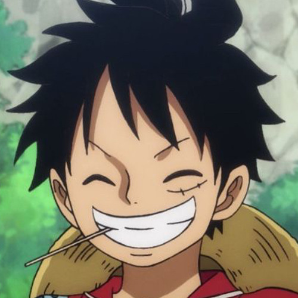

The Onepiece Experience
The story of Monkey D. Luffy
Luffy is on a journey to be the Pirate King, join him in his journey and follow him on his journey as a fellow nakama ! A major theme in One Piece is dreams. It's the motivating factor of all the Straw Hat Pirates, bar none. Many minor characters have an arc regarding dreams they have or used to have. Nearly all the villians have at least implied that their dreams have been broken in some way. Click on the link below to get a better understanding of the show !!
